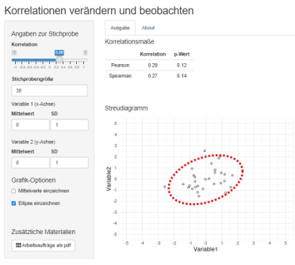

Shiny und Co.
interaktive Apps für Data Literacy erstellen und nutzen
Toolbeschreibung
Digitale Werkzeuge spielen sowohl in der Lehre als auch in der Erhebung, Verarbeitung und Analyse von Daten eine zentrale Rolle. Während ein mögliches Lernziel im Bereich Data Literacy die Nutzung von Programmen zur Datenanalyse ist, bieten einige dieser Programme darüber hinaus die Möglichkeit, Materialien für Lernende zu erstellen und Lernprozesse im Sinne eines optimierten Scaffoldings zu unterstützen.
Das R-Paket Shiny (Chang et al., 2023) wird ähnlich wie der RStudio Desktop von Posit entwickelt und ermöglicht es, eine Web-App mit einer grafischen Benutzeroberfläche und Berechnungen im Hintergrund zu gestalten (vgl. Beitrag „Data Literacy Education mit R und RStudio“). Das Paket stellt hierzu verschiedene Optionen zur Verfügung (zum Beispiel Eingabemöglichkeiten wie Schieberegler und Checkboxen, Anordnung von Ein- und Ausgabeelementen, ähnlich zu ipywidgets im Beitrag „Gestalterische und interaktive Aspekte zum Einsatz von Jupyter Notebooks in Online-Kursen im Kontext Data Literacy“). Um die Apps via Link im Browser zu nutzen, müssen diese auf Shiny-Web-Servern gehostet werden, auf denen im Hintergrund Berechnungen und Simulationen ausgeführt werden. Hierzu können Hochschulen eigene Server betreiben und die Software für den Shiny-Server kostenfrei nutzen. Alternativen hierzu sind die Nutzung eines Servers von Posit, die Ausführung auf einem Rechner aus R heraus, oder die Integration in eine learnr-Umgebung (Stoudt et al., 2022) integriert werden. Posit arbeitet aktuell an Varianten von Shiny-Apps in denen ein spezieller Link erstellt wird, wodurch die Berechnungen auf der Nutzendenseite ausgeführt werden. Hier reicht auf Nutzendenseite ein Browser, der Code kann einfach auf einem Repositorium (z.B. GitHub) gehostet werden.
Durch die vielfältigen Gestaltungsmöglichkeiten sind Übergänge zu Dashboards (Darstellung von Analyseergebnissen) und Online-GUIs (Graphical User Interfaces) zur Datenauswertung bis hin zu professionell gestalteten Lernumgebungen fließend. Ein besonderes Potenzial der Apps liegt darin, dass Berechnungen im Hintergrund bleiben können und Konzepte interaktiv erfahrbar werden. Dies kann jedoch den Schritt zur eigenen Arbeit mit Code erschweren.-Einen Mittelweg stellt die Anzeige oder Ausgabe von Code innerhalb einer App dar.
Die R Funktionalitäten ermöglichen es zudem, hochwertige Grafiken zu erstellen und diese mit Text, Tabellen, Formeln etc. zu kombinieren. Dies ermöglicht verschiedene Zugänge zu zentralen Konzepten und somit den Aufbau flexibler handlungsleitender Schemata durch die Lernenden (Fries et al., 2021).

Voraussetzungen & Zielgruppen
Idealerweise laufen Apps auf einem Shiny-Server und stellen so für Lernende ein niedrigschwelliges Angebot dar, da der Zugang unmittelbar über einen Browser mit Internetverbindung erfolgt. Werden die Apps lokal ausgeführt, stellt die dafür nötige Softwareinstallation einen möglichen Stolperstein dar. Hier gibt es die Möglichkeit, Apps im Rahmen eines Paketes zugänglich zu machen, oder durch im Shiny-Paket enthaltene Befehle wie runUrl() oder runGitHub() Code direkt von Webseiten oder Repositorien zu laden und auszuführen. Damit Apps als sinnvolles Angebot durch die Lernenden betrachtet werden, ist eine durchdachte Entwicklung und Einbindung in die Lehre notwendig. Lernziele und –inhalte sowie der geplante Einsatz der App sollten berücksichtigt werden, um erste Konzepte für eine App zu erstellen. Zur Entwicklung selbst sind Grundkenntnisse in R und dem Zusatzpaket Shiny notwendig. Kenntnisse im Bereich Webentwicklung (HTML, CSS) sind manchmal hilfreich, um spezifische grafische Anpassungen vorzunehmen. Darüber hinaus gibt es diverse Zusatzpakete zu Shiny, die die Funktionalitäten erweitern und das Aussehen der Apps verändern können. Für die Usability durch die Lernenden bietet sich jedoch ein einheitlicher und übersichtlicher Aufbau an.
Kompetenzen
Die Stärke der Apps ist die Möglichkeit des konzeptuellen Begreifens: Lernende können zentrale Konzepte aus dem Bereich der Datenverarbeitung, -auswertung und –visualisierung interaktiv erproben, wobei technische Details beziehungsweise Formeln in den Hintergrund treten können und die App darüber hinaus Lernende führen kann. Es findet also in mehrfacher Hinsicht Scaffolding statt, wodurch Raum für Lernprozesse und kritisches Hinterfragen bleibt. Konzepte können durch Visualisierung theoretischer Inhalte (zum Beispiel App zum Thema Verteilungsformen) oder Simulation von Daten (zum Beispiel Steuerung eines datengenerierenden Prozesses durch die App) vermittelt werden. Daneben können Apps die Nutzenden durch die Datenanalyse führen bzw. verschiedene Analysewege ausprobieren lassen. So kann prozedurales Wissen zur Durchführung von Datenanalysen vermittelt werden (zum Beispiel App zum Thema Machine Learning. Link: https://fomshinyapps.shinyapps.io/mlr3shiny/). Ein zusätzlicher Kompetenzbereich bei fortgeschrittenen Lernenden ist die Programmierung von Apps: Hier kann die Programmierung selbst ein Lernziel sein. Alternativ können Apps programmiert werden, um zum Beispiel Problemstellungen bei der Datenanalyse zu bearbeiten, die zielgruppengerechte und interaktive Kommunikation von Ergebnissen unterstützen, oder um in anderen Lehrveranstaltungen verwendet zu werden (Wang et al., 2021).
Lerninhalte & Methoden
Da die Apps auf einer Datenanalyse-Software aufbauen, reichen die Themen typischer Apps von dem Einfluss einzelner extremer Werte, dem Vergleich grafischer Darstellungsmöglichkeiten, der Veranschaulichung von Zufallsexperimenten sowie theoretischen und simulierten Verteilungen bis hin zur Anwendung und Funktionsweise gängiger und neuerer Auswertungsverfahren. Trotzdem sind Apps keine Selbstläufer – Lernende sollten bei der Arbeit mit den Apps, beispielsweise bei der Nutzung verschiedener Eingabemöglichkeiten oder bei der Integration dieser Repräsentationsformen, unterstützt werden. So können Apps durch Lehrende vorgeführt beziehungsweise in ein Unterrichtsgespräch integriert werden. Diese Variante bietet die Möglichkeit, spezifische Punkte in der App durch die Diskussion herauszuarbeiten. Andererseits bieten sich Apps dafür an, den frontalen Vortrag durch die individuelle oder gruppenbasierte Nutzung der Apps zu unterbrechen. Hier sind die Lernenden selbst aktiv, was als motivierend wahrgenommen wird, jedoch dazu führen kann, dass längere Lernzeiten benötigt werden (Zhao et al., 2023). Durch Think-Pair-Share und Live-Feedback-Systeme können beide Ansätze verknüpft werden (Gehrke et al., 2021). Unabhängig von der Sozialform scheint die Nutzung von Aufgaben, die mit der App beantwortet werden, ein sinnvoller Ansatz. Durch ein geschicktes Vorgehen können Lernende durch Fragen kognitiv aktiviert werden, indem zum Beispiel Fragen gestellt werden, welche Ergebnisse die App voraussichtlich ausgibt beziehungsweise welche mit den Apps bearbeitet werden können (GAISE College Report ASA Revision Committee, 2016; Wang et al., 2021). Durch Gamification-Elemente beinhalten einige Apps bereits Aufgaben und Rückmeldungen an die Lernenden (zum Beispiel Quiz, Guess-the-Correlation, p-hacker). Auch an anderen Stellen scheint ein schrittweises Vorgehen sinnvoll. Ein ausführliches Beispiel für die Einbindung von Shiny-Apps in einer Lehrveranstaltung findet sich bei Fawcett (2018).
Erkenntnisse & Erfahrungen
Wie oben erwähnt ist es wichtig, sowohl bei der Entwicklung als auch beim Einsatz der App die Integration in das Lehr-Lern-Szenarium zu beachten: Bei der Entwicklung der Apps ist zu überlegen, welche Lernziele damit erreicht werden können oder sollen, und wie sich diese in die übergeordneten Ziele der Lerneinheit und des Kurses einordnen. Bei der Entwicklung einzelner Apps hat es sich als sinnvoll erwiesen, neben einer Ideensammlung eine Minimalversion der App zu konzipieren und zu programmieren, die stufenweise erweitert wird. Daneben stellt die Recherche existierender Apps einen sinnvollen Schritt dar: Die Apps illustrieren verschiedene Nutzungsmöglichkeiten und Features; im Idealfall kann eine vorhandene App direkt verwendet oder zumindest angepasst werden. Auch die Nutzung reaktiver Programmierung (Berechnungen finden nur dann statt, wenn an relevanten Eingabeparametern etwas verändert wird) kann im Hinblick auf die Rechenleistung und auf didaktische Aspekte sinnvoll sein.
Apps sollten durch die Lehrenden gezielt eingebunden werden. So können Aufgaben mit den Apps verknüpft beziehungsweise mit Erkenntnissen aus der Arbeit mit den Apps in der Veranstaltung oder im Learning Management System (LMS) reflektiert werden. Für die Lehre sollten zudem zugrunde liegende Serverkapazitäten berücksichtigt und gegebenenfalls erweitert werden. So kann eine simulationsintensive App bei gleichzeitigen Zugriffen über viele Endgeräte zu einer Überlastung von Servern führen (flash traffic). Daneben ist es wichtig, die Lernenden nicht zu über- oder zu unterfordern: Neben einer angemessenen Explorationsphase kann der Austausch mit Lehrenden und Tutor:innen dazu beitragen, dass der Erkenntnisgewinn bei der Arbeit mit den Apps vergrößert wird (Fawcett, 2018; Hahn et al., 2020; Wang et al., 2021). Videos, Texte oder anderweitige Hinweise zur Nutzung der Apps stellen Alternativen für asynchrone Szenarien dar.
Hilfreiche Links
- Webauftritt bei Posit: https://shiny.posit.co/
- Einführende Anleitung zum Erstellen von Apps: https://shiny.posit.co/r/articles/start/build/
- Einige App-Sammlungen mit Beispielen:
- Beispiel-App aus Abbildung 1: https://gauss.metpsy.uni-jena.de/rshiny/sonja/Cor_AO/
Autor:innenprofile
Sonja Hahn hat an der Pädagogischen Hochschule Karlsruhe Shiny Apps für die Lehre im Bereich Forschungsmethoden entdeckt und eingesetzt. Aktuell baut sie eine Lehrveranstaltung zum Thema Data Literacy an der Hochschule Darmstadt auf.
Karsten Lübke ist Lehrender im Kontext Data Literacy an der FOM Hochschule und nutzt dort seit Jahren diverse selbst programmierte Shiny Apps.